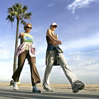
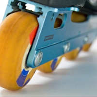

Хода людини. Види суглобів. Прояв сили тертя в організмі людини

Хода людини. Види суглобів
Опорна рухова система забезпечує пересування тіла або його частин у просторі. Вона складається зі скелета і скелетних м‘язів. Скелети людини і хребетних тварин дуже подібні. Вони складаються з однакових відділів, які утворені подібно розташованими кістками. Проте в процесі еволюції людини її скелет набув суттєвих відмінностей порівняно зі скелетом тварин. Людина має вертикальне положення тіла і спирається тільки на нижні кінцівки.
Пояс нижніх кінцівок утворюють парні тазові кістки та крижова кістка. Спереду тазові кістки з’єднуються і утворюють напівсуглоб, так зване лобкове зрощення. А ззаду (з крижовим відділом хребта) – малорухливий суглоб. На кожній тазовій кістці є кульшова западина , до якої входить головка стегнової кістки, утворюючи кульшовий суглоб.
У скелеті вільної нижньої кінцівки (ноги) виділяють стегно, гомілку і стопу. Стегно складається зі стегнової кістки, гомілка - великогомілкової та малогомілкової кісток. Стегнова кістка найдовша серед інших , вона становить 27,5 % зросту людини. Стопа утворена сімома короткими кістками передплесна , з яких найбільшими є п’яткова та таранна кістки, п’ятьма довгими кістками плесна і кістками пальців (такою самою кількістю, як і в кисті руки ). Стопа має склепінчасту будову. До складу вільної кінцівки належить і надколінок – невелика трикутна кістка.
Розрізняють нерухомі, напіврухомі та рухомі (суглоби) з’єднання кісток. Рухомі з’єднання кісток – це суглоби. Поверхні кісток суглоба вкриті шаром гладенького гіалінового хряща, який значно зменшує тертя між кістками і полегшує рухи.
Кожний суглоб оточений суглобовою сумкою , утвореною міцною сполучною тканиною. Із стінки суглобової сумки в порожнину суглоба виділяється суглобова рідина. Вона діє як мастило, зменшуючи тертя в суглобах. Суглобова рідина не тільки зменшує коефіцієнт тертя в 20 разів. Але має деякі властивості: вона може виділятися інтенсивніше при збільшенні фізичного навантаження. Зовні суглоби укріплені зв’язками .
Суглоби бувають одноосьовими , вони виконують рухи в одному напрямку (наприклад , ліктьовий суглоб ); двохосьовими - у двох напрямках (наприклад, колінний променевозап’ястковий суглоби) та трьохосьовими - у трьох напрямках (наприклад, кульшовий і плечовий суглоби).
Міцність суглобів небезмежна, якщо тиск у суглобному хрящі перевищує 350 Н/см2. Змащування припиняється і виникає його механічне стирання. З віком змащування суглобної сумки зменшується.

Сила тертя
З тертям ми зіштовхуємося на кожному кроці. Вірніше було б сказати, що без тертя ми й кроку ступити не можемо. Тертя може бути корисним і шкідливим, цю аксіому людина опанувала ще на зорі цивілізації. Адже два найголовніших винаходи-колесо й добування вогню - пов‘язані саме із прагненням зменшити й збільшити ефекти тертя.
Силу, яка виникає при відносному переміщенні тіл, що дотикаються, називається силою тертя. Fтер=μN.
Коефіцієнт тертя μ залежить від якості поверхні дотичних тіл від речовин, з яких виготовлені.
Тертя дуже поширене в природі і може або сприяти діяльності людини, або заважати. Наприклад , при русі людини по твердих поверхнях, тертя сприяє утриманню вертикального положення але при русі суглобів – заважає. У кожному випадку людина навчилася керувати цими явищами, створюючи умови, коли сила тертя зменшується або, навпаки, збільшується. Так, для збільшення безпеки руху автомобіля і людини , шини і підошву взуття роблять із шорсткою поверхнею, яка до всього має візерункові заглибини. Для зменшення тертя використовують мастило, тоді шар рідини розділяє тертьові поверхні, які вже не взаємодіють між собою.